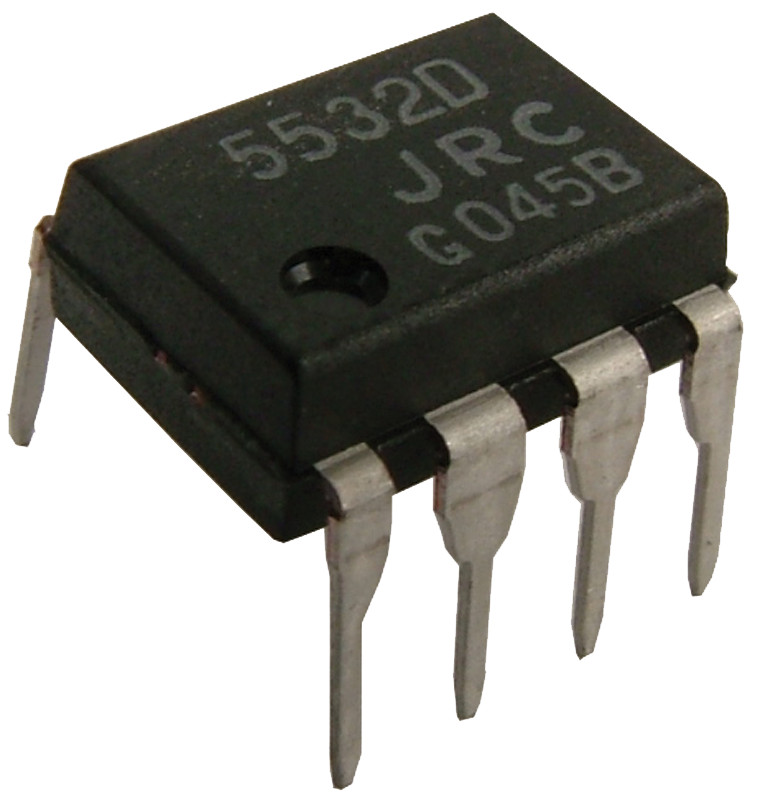

4 Notions élémentaires d’électronique
Les chapitres précédents nous ont permis d’aborder un certain nombre de notions fondamentales sur le son ainsi que sur l’acoustique des salles. Nous allons maintenant aborder quelques notions d’électricité et d’électronique. Le but n’est pas de savoir lire un schéma électronique, ou de comprendre comment réaliser tel ou tel circuit, mais bien d’aborder les quelques notions indispensables pour le travail du son.
Durant tout son trajet dans le milieu analogique, le signal sonore est représenté par un courant électrique. Il est donc régi par les mêmes règles que n’importe quel autre courant, même s’il possède une certaine spécificité, comme son oscillation. Un courant électrique se caractérise par le déplacement d’électrons dans un matériau conducteur (le métal par exemple). Un matériau, comme le plastique, qui ne permet pas aux électrons de se déplacer, est qualifié d’isolant.
Les électrons font partie des composants de l’atome. Ils sont chargés négativement et se déplacent donc dans le sens inverse du courant.
4.1 Les grandeurs physiques
Commençons par aborder les grandeurs physiques liées à l’électricité.
4.1.1 L’intensité
L’intensité électrique, notée I et exprimée en Ampère (A), est une grandeur permettant de mesurer le débit du courant électrique. Ceci est parfaitement analogue à un débit d’eau. Si un robinet est faiblement ouvert, l’écoulement de l’eau sera faible, s’il est complètement ouvert, le débit sera fort.
4.1.2 La tension
La tension, généralement notée U et exprimée en Volt (V), désigne une différence de potentiel entre deux points d’un circuit. Imaginons deux réservoirs d’eau, remplis d’un volume différent et connectés par une valve. Dans ce cas, la différence de potentiel serait la différence du volume d’eau entre les deux réservoirs. En d’autres termes, s’il n’y a pas de tension, il n’y a pas de débit.
On choisit, en général, la masse, valant zéro volt, comme point de référence.
Dans le cas de l’audio, la tension électrique du signal sonore est homologue à la variation de pression.
Tout comme la pression acoustique, il est possible de rendre compte d’une variation de tension électrique à un niveau sonore en décibel. Le relation liant la tension et le niveau est :
\[ L_{dB} = 20 \, log (\frac{U}{U_{ref}}) \]
Il existe plusieurs valeurs pour U_{ref}, donnant lieu à différentes unités de mesures :
- dBm, définie à l’apparition du téléphone, propose \(U_{ref} = 0.775 V\) pour une impédance de \(600 \omega\). Cette impédance correspond à celle des lignes téléphoniques.
- dBu / dBv, qui ne tient plus compte de la charge d’impédance, \(U_{ref} = 0.775 V\).
- dBV, où \(U_{ref} = 1 V\)
Lorsque la tension double, le niveau augmente de six décibels. Lorsque la tension est multiplié par dix, le niveau augmente de vingt décibels.
On peut également définir l’augmentation du niveau sonore par rapport à la puissance du signal. On admet que :
\[ P = \frac{U^2}{Z} \, U = \sqrt{P \times Z} \]
Où \(P\) est la puissance. En remplaçant dans l’équation précédente, on trouve :
\[ L_{dB} = 20 \, log (\frac{\sqrt{P}}{\sqrt{P_{ref}}}) \> = 10 \, log (\frac{P}{P_{ref}}) \]
Lorsque la puissance double, le niveau augmente de trois décibels. Lorsque la puissance est multiplié par dix, le niveau augmente de dix décibels.
On utilisant la loi d’ohm (voir ci-dessous) et la relation entre la puissance, la tension et l’impédance, on trouve également que :
\[ P = U \times I \]
4.1.3 L’impédance
Nous connaissons, en général, la loi d’Ohm. Celle-ci permet de donner une relation entre l’intensité du courant et sa tension, aux bornes d’un composant d’un circuit (aussi appelé dipôle).
\[ U = R \times I \]
Où \(R\) est la résistance du dipôle. Elle traduit la facilité d’un courant à se déplacer dans le dipôle. Pour reprendre les analogies ci-dessus, la résistance correspondrait à une valve. À tension constante, si la résistance tend vers zéro, le débit est très important. Si la résistance tend vers l’infini, le débit sera très faible. Si elle est nulle, alors nous sommes dans le cas d’un court-circuit (interrupteur fermé). Si elle est infinie, cela traduit une absence de connexion entre deux points d’un circuit (interrupteur ouvert). L’unité de cette résistance est l’ohm.
L’impédance traduit elle aussi l’opposition d’un circuit au passage d’un courant électrique, mais dans le cas d’une tension oscillante. Dès lors, l’impédance englobe les effets de résistance, de capacitance et d’inductance (voir ci-dessus).
4.2 Les composants électroniques
4.2.1 Les composants passifs

Étudions maintenant les composants électroniques les plus communs. Nous avons en premier les résistances. Ce sont des dipôles purement résistifs. Leur valeur s’exprime en ohm. Une résistance s’oppose donc au passage du courant. Pour rappel, la tension a ses bornes est \(U = R \times i\).


Viennent ensuite les condensateurs. Ils sont constitués de matériaux conducteurs séparés par une couche isolante. La relation entre tension et intensité à ses bornes en régime oscillant est :
\[ U = Z_c \times I \]
Où \(Z_c\) est l’impédance d’un condensateur idéal. Nous pouvons ici la même analyse que plus haut, quand \(Z_c\) tend vers l’infini le courant ne passe plus, quand \(Z_c\) tend vers 0, le débit est important. L’impédance d’un condensateur est fonction de sa capacité (noté C, et s’exprime en farads).
\[ Z_c = \frac{1}{jC\omega} \> = 2 \pi \, f\]
Si la fréquence \(f\) tend vers l’infini, \(Z_c\) tend vers zéro, si la fréquence tend vers zéro, \(Z_c\) tend vers l’infini. On constate donc que l’impédance d’un condensateur varie en fonction de sa fréquence. On peut assimiler un condensateur à un interrupteur ouvert en basse fréquence et à un interrupteur fermé en haute fréquence.
Terminons sur les bobines. Ces composants sont constitués d’un enroulement de câble en cuivre et possède une inductance notée L et s’exprimant en henrys. Étudions à nouveau la relation entre tension et intensité, aux bornes d’une bobine :
\[ U = Z_L \times I \]
Où \(Z_L\) est l’impédance d’une bobine idéale. Cette impédance se calcule grâce à la relation suivante :
\[ Z_L = j\omega L = 2 \pi \, f \]
Si la fréquence \(f\) tend vers l’infini, \(Z_L\) tend vers l’infini. Si \(f\) tend vers zéro, alors \(Z_L\) tend vers zéro. On observe donc le comportement inverse du condensateur. Une bobine se comporte comme un court-circuit en basse fréquence et comme un interrupteur ouvert en haut fréquence.
On admet j comme un outil mathématique permettant de simplifier certaines écritures et certains calculs. On l’appelle le nombre complexe, tel que \(j^2 = -1\). Dans nos applications, sa présence dans les relations des impédances de condensateur et de bobine implique un déphasage de \(-\frac{\pi}{2}\) pour un condensateur, et, de \(\frac{\pi}{2}\) pour une bobine.
L’association de résistances, de condensateurs et de bobines donne des circuits RL, RC où RLC, permettant de réaliser des opérations de filtrage sur le signal.
4.2.2 Tubes & semi-conducteurs



Les tubes, tubes à vide, ou parfois, lampes, sont historiquement les premiers composants permettant d’amplifier le signal, contre une certaine tension d’alimentation. On les retrouve donc dans les préamplificateurs, égaliseurs, compresseurs, et autres amplificateurs jusque dans les années soixante. Ils sont alors progressivement remplacés par les transistors, composants appelés semi-conducteurs. Ces transistors permettent de réaliser la même amplification du signal qu’une lampe, mais sont beaucoup plus petits et demandent aussi moins de puissance électrique pour réaliser le même facteur d’amplification (aussi appelé gain). Peu de temps après la mise au point des transistors, les circuits intégrés sont inventés. Ces petites boîtes renferment plusieurs transistors, et peuvent également servir à l’amplification de signaux.
Il est très important de savoir que l’invention du transistor et des circuits intégrés est sans doute l’avancée technologique la plus importante du siècle dernier. Elle a permis le développement exponentiel de l’industrie informatique grâce à la miniaturisation des composants.
L’utilisation de tubes, de transistors ou de circuits intégrés au sein des machines audio, est souvent associée à une certaine « couleur ». Il y aurait donc un son des tubes, un son des transistors et un son des circuits intégrés. Les différences entre ces dipôles apparaissent principalement dans les zones de non-linéarité des composants, typiquement dans leur zone de saturation. La saturation apparaît lorsque la tension du signal amplifiée dépasse la tension d’alimentation du composant responsable de cette amplification. On observe alors l’apparition de certaines harmoniques. La distribution des harmoniques générés est différente en fonction du dipôle utilisé.
Il est compliqué d’attribuer une couleur sonore particulière à un composant. En effet, le comportement d’un composant est fondamentalement conditionné par la topologie du circuit dans lequel il est utilisé ainsi que par les autres composants qui l’entourent. Il convient donc, à l’humble avis de l’auteur, d’être relativement prudent sur des expressions telles que « son des tubes » ou « son des transistors », particulièrement quand il s’agit de dire que l’une des technologies « sonnerait mieux » que l’autre. L’histoire de l’électronique musicale regorge d’exemples et de contre-exemples pour chacune de ces affirmations.
4.3 L’influence de l’impédance entre différents appareils.
Sur la fiche technique des appareils, on trouve des valeurs pour son impédance d’entrée et son impédance de sortie. Imaginons que nous connections un appareil A dans un appareil B. En pratique, nous faisons en sorte que l’impédance de sortie de l’appareil A soit dix fois inférieure à l’impédance d’entrée de l’appareil B. À partir du moment où ces impédances sont proches, voire que l’impédance de sortie de A soit plus grande que celle d’entrer de B, nous allons atténuer le signal transitant entre les deux appareils. Étudions de plus près ce phénomène.
Soit le schéma électronique ci-dessous. On appelle \(U_{out}\) la tension de sortie de l’appareil A et \(Z_{out}\) son impédance de sortie. De façon similaire, on appelle \(U_{in}\) la tension d’entré de l’appareil B et \(Z_{in}\) son impédance d’entré.

Dans ce circuit, \(Z_{eq} = Z_{in} + Z_{out}\) et \(U_{out} = Z_{eq} \times i\). Alors, \(i = \frac{U_{out}}{Z_{eq}} = \frac{U_{out}}{Z_{in} + Z_{out}}\). Toujours grâce au circuit ci-dessus, on peut dire que \(U_{in} = Z_{in} \times I\). En remplaçant dans l’expression précédente on trouve : \(\frac{U_{in}}{Z_{in}} = \frac{U_{out}}{Z_{in} + Z_{out}}\)
\[ \frac{U_{in}}{U_{out}} = \frac{Z_{in}}{Z_{in} + Z_{out}} = \frac{1}{1+\frac{Z_{out}}{Z_{in}}} \]
Dès lors, si \(Z_{in}\) est très grand devant \(Z_{out}\), alors \(U_{in}\) tend vers \(U_{out}\). Si \(Z_{out}\) est très grand devant \(Z_{in}\), alors \(U_{in}\) tend vers \(0\).
Cela nous amène à démontrer l’affirmation ci-dessus. Maintenant, nous savons que dans un circuit, l’impédance varie en fonction de la fréquence. Dès lors, une mauvaise adaptation d’impédance ne fera pas que diminuer l’amplitude du signal, mais filtrera aussi une partie de spectre, généralement les hautes fréquences.
On considère aussi l’adaptation d’impédance en tension. Lorsque que nous considérons la puissance les relations sont différentes (cf section sur les hautparleurs).